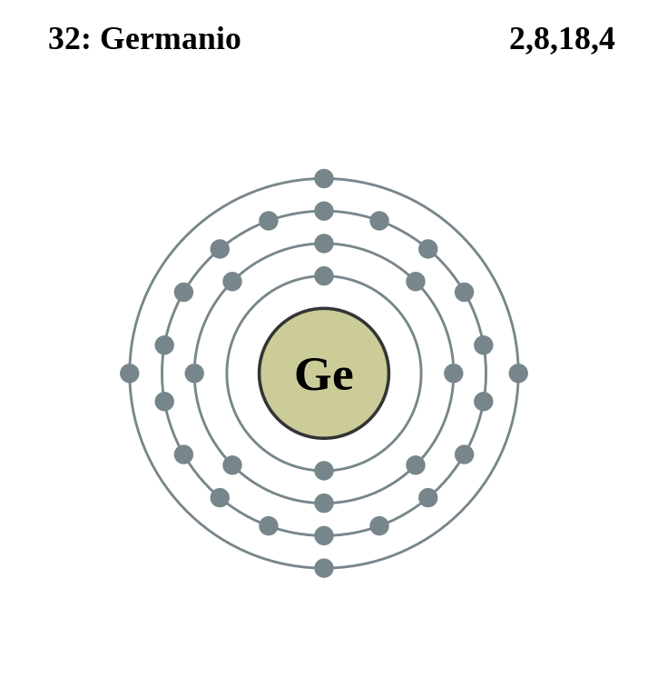

|
|
||
|
GERMANIO Su estado puro, este metaloide es de color blanco grisáceo, cristalino y frágil. Se encuentra en la argirodita (un sulfuro de germanio y plata), la germanita, las menas de cinc, el carbón y otros minerales. El germanio es un semiconductor muy importante y se utiliza como un elemento en transistores para aplicaciones electrónicas. Puede utilizarse como un catalizador, un agente de aleación y como revestimiento fosforescente en lámparas fluorescentes. El elemento y su óxido son transparentes si se someten a luz infrarroja y se utilizan en espectrofotómetros y detectores de luz infrarroja. El germanio también se ha utilizado en objetivos de cámaras gran angular y en lentes de microscopios. |
 |
DATOS Número Atómico: 32 Peso Atómico: 72.63 Electronegatividad: 2.01 Configuración Electrónica: [Ar]3d¹⁰4s²4p² Estados de Oxidación: +4,2 No. de Electrones de Valencia: 4 |